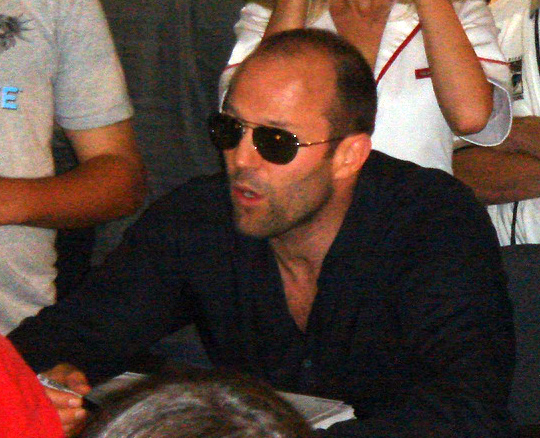

Кратко обо мне

Меня зовут Жижа Иван. Я учусь в группе ППОИС2609 на вечернем отделении.
Я работаю аналитиком и параллельно изучаю программирование, интернет-технологии, проектирование программного обеспечения и другие дисциплины, связанные с разработкой информационных систем.
Эта фотография используется как временная заглушка 😎. В дальнейшем его можно заменить другим файлом profile-placeholder.jpg без изменения HTML-кода. 👽
Мои интересы
- Современные информационные технологии
- Искусственный интеллект
- Веб-разработка
- Компьютерные игры
- Автомобильные путешествия
- Ремонт и изучение устройства различных вещей
- Кулинарные эксперименты
Почему я изучаю веб-разработку
Я хочу лучше понимать принципы работы веб-приложений и научиться самостоятельно создавать сайты. Полученные знания планирую применять как в учебных заданиях, так и в собственных проектах.